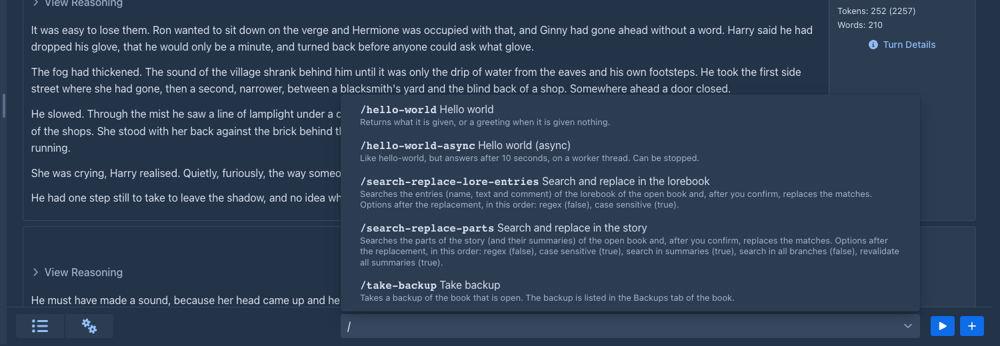
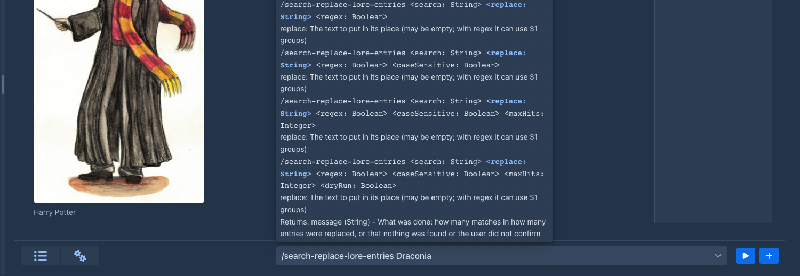
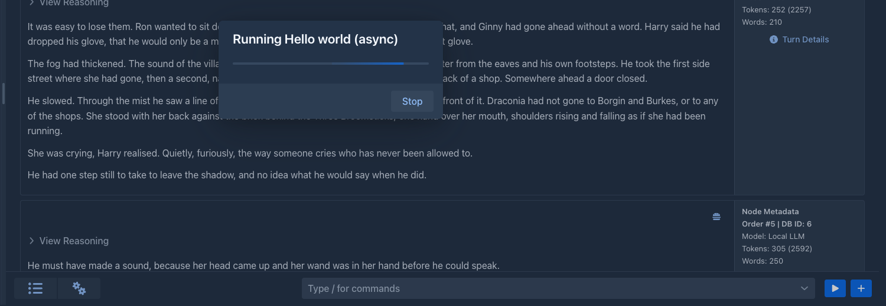

The command bar
CommandBar (package ui.components) is the input line for commands, a Composite<HorizontalLayout> with a ComboBox
and a run button. It is a separate component: it can be placed anywhere (a dialog, a sidebar, a toolbar). The story tab
of the book window places it next to the menu bar; the bar knows nothing about the book.
flowchart LR
user["user types<br/>/name arg"] --> bar["CommandBar"]
bar --> help["help Popover<br/>(CommandHelp)"]
bar -->|executeLine| svc["CommandService"]
svc -->|future| bar
bar -->|async| prog["CommandProgressDialog<br/>(Stop)"]
bar -->|onCommandResult| target["CommandResultTarget"]
target -.-> view["CommandResultView<br/>popover above the bar"]The list the bar shows when / is typed, and the help popover of a command while its arguments are typed:


Using it
CommandBar bar = new CommandBar();
bar.setResultTarget(result -> myField.setValue(result.text()));
layout.add(bar);CommandBar is @Configurable: create it with new in a session; the services are injected. It implements HasEnabled
(the story part disables it while the story is frozen by a running generation).
Results are delivered, not displayed
The bar does not show what a command returned. It hands a CommandResult(commandName, humanName, value) to its
CommandResultTarget, an interface with:
-
onCommandResult(CommandResult)– called on the UI thread, inside the session, once for every command that finished (result.text()is the value as text, empty fornull), -
clearCommandResult()– the user started something new (typed, or ran another command), so a result that is still shown is out of date. Default: does nothing.
Each place implements the target as it needs: the story tab shows the result in a popover (CommandResultView), another
component could insert the text into a field, use the object as a value, or ignore it. Failures and stopped commands are
reported by the bar itself with notifications.
CommandResultView is a plain @Configurable class implementing the target; create(Component target) builds a Popover
above target (TOP_START) with a title, a close button and the body. It closes with the cross, with Esc and with a
click outside.
Layout rule: popovers, not rows
The help and the result are popovers over the target, so the bar is one row high and never changes the layout (an
earlier version put the help under the field and misaligned its neighbours). Popovers are opened and closed from the
server (setOpenOnClick/Focus/Hover(false), setModal(false)). The CSS classes are in shared-styles.css and CssStyles
(command-box, command-bar, command-help*, command-item-*, command-severity*, command-result*).
How the field works
The help
CommandHelp.of(allCommands, text, localizer) is pure (no UI; the localizer turns an L key into the text of the user, the bar passes loc::getValue) and returns the typed name, the command, its forms that fit what is
typed, the index of the argument being typed and whether there are too many arguments. The bar renders: the description,
the description with the data severity label, the forms with the current parameter highlighted and its description, the return value, and an error line for too many
arguments, an unknown command or text without a slash. The texts are localization keys (LABEL_COMMAND_*,
HELP_COMMAND_*, ERROR_COMMAND_*); the Japanese and Chinese bundles carry them too.
The label of the data severity is a Span made by severityBadge, in the list and in the help:
red (command-severity-destructive) for DESTRUCTIVE, green (command-severity-non-destructive) for NON_DESTRUCTIVE, the
explanation in its title. The texts come from CommandDataSeverity.getLabel() and getDescription().
Running and asynchronous commands
run(line) closes the help, clears the result (clearCommandResult()), empties the field (clearInput(); text that is not a known command returns earlier and stays) and calls commandService.executeLine. For a
command that completed (synchronous) the result is delivered at once. For an async command the bar opens a
CommandProgressDialog – modal, an indeterminate ProgressBar, the two status lines of the command (setStatus,
setSubStatus; a line that is empty is hidden) and a Stop button whose handler cancels the future. The bar feeds the
lines from CommandRun.addStatusListener through ui.access(...), after reading the status already set, and the state
of the button from addUninterruptableListener (disabled while the command is uninterruptable, setStopEnabled). When
the future completes, ui.access(...) (with the request scope and UIPushGuard.push) closes the dialog and delivers the
result, or shows a notification for a stop, a CommandException or an IllegalArgumentException. This is why an async
command must react to isTerminated(): Stop only cancels the future.

Adding the bar elsewhere
-
Create the
CommandBarwhere the component is built (a@Configurableclass or a plugin decorator) and set its result target. -
Give it a CSS class for sizing. Do not use inline styles;
command-box(flex 1 1 40%, minimum width 12 em) is the one the story tab uses. -
Disable it with
setEnabled(false)while something locks the UI. -
Decide what a result means there. Reuse
CommandResultViewif a popover fits.
In the story tab, ManuscriptStoryPart.createCommandBox() builds the bar and the result view and returns the bar;
setFrozen enables and disables it. The method is @Extendable/@PublicAPI (from 1.4.0), so a plugin can replace or wrap
the bar through a decorator on its return value (see Extendable classes).
Two setters turn the bar into the one of another place. setCommands(Supplier<List<CommandDefinition>>) makes it offer, and show the
help of, only those commands instead of all the registered ones, and setLineRunner(Consumer<String>) hands a line (the command
with its slash, a known one) to the runner in place of commandService.executeLine; the result and the progress are then the
runner's business and the result target is not used. The console of an agent uses both: it offers /compact,
/clear-workspace and the commands that only read or add, and runs them on the run, not on a book window.
The bar is not on the phone's story tab yet; only the desktop ManuscriptStoryPart has it.